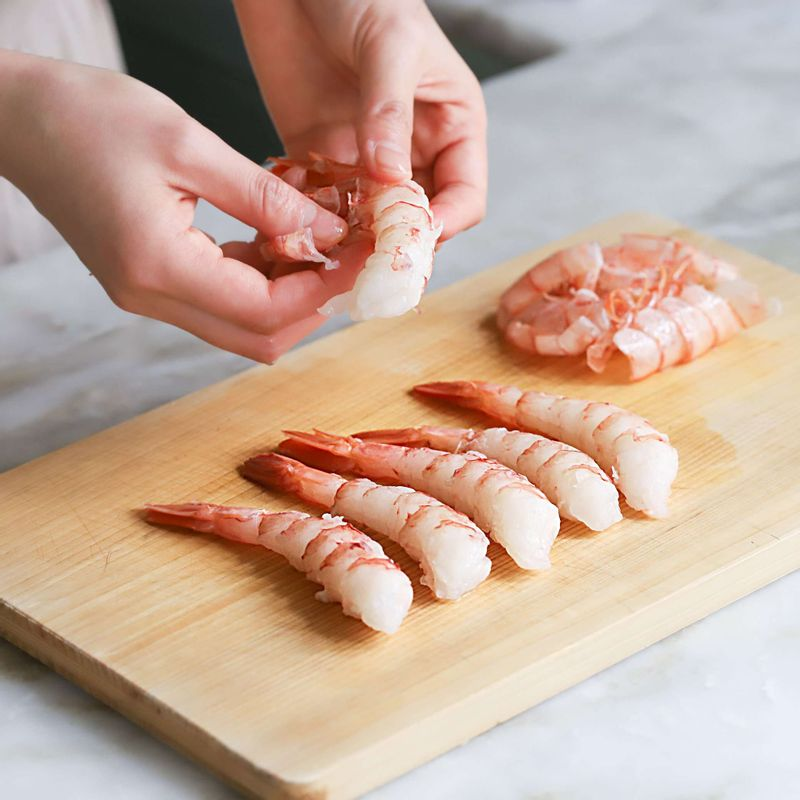
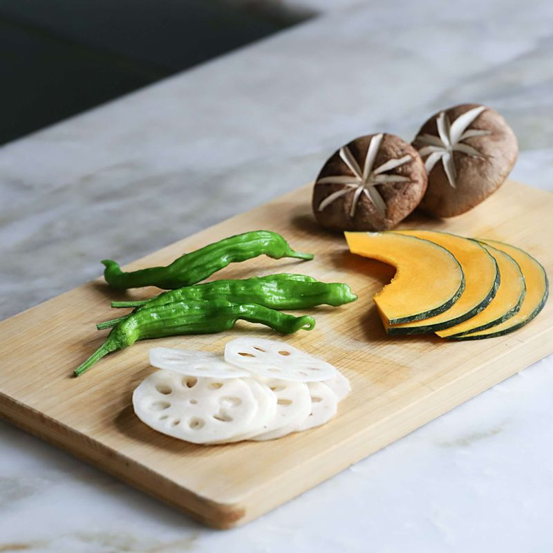
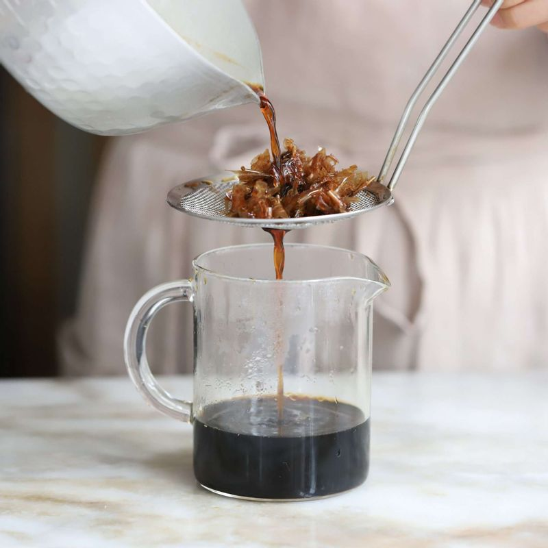
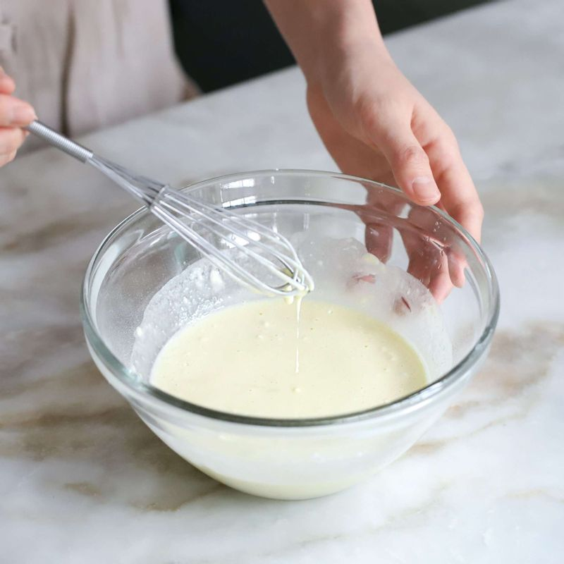
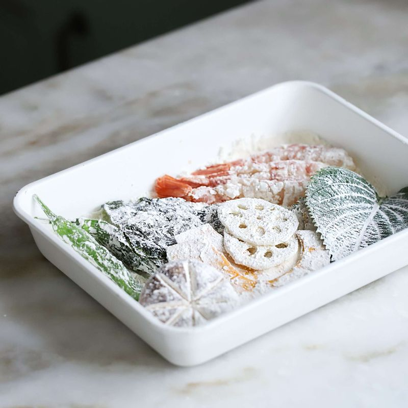
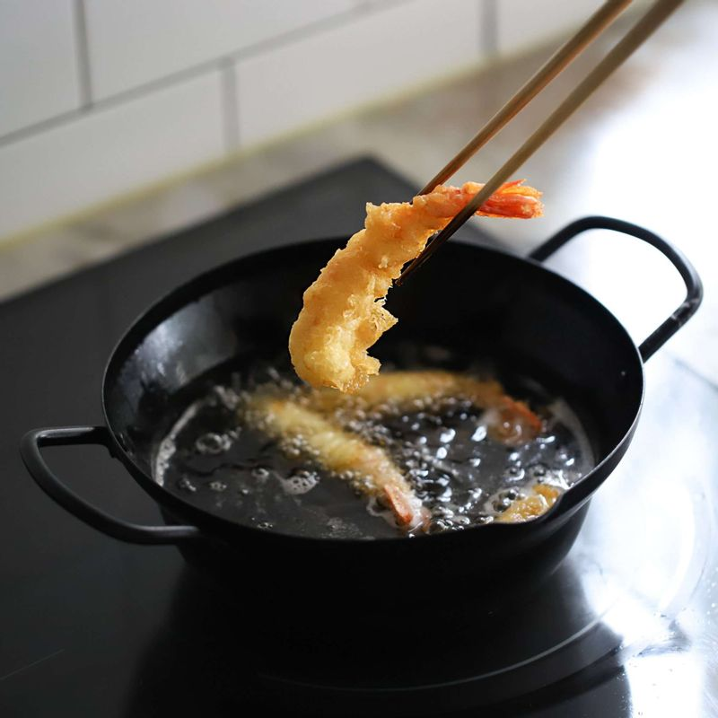
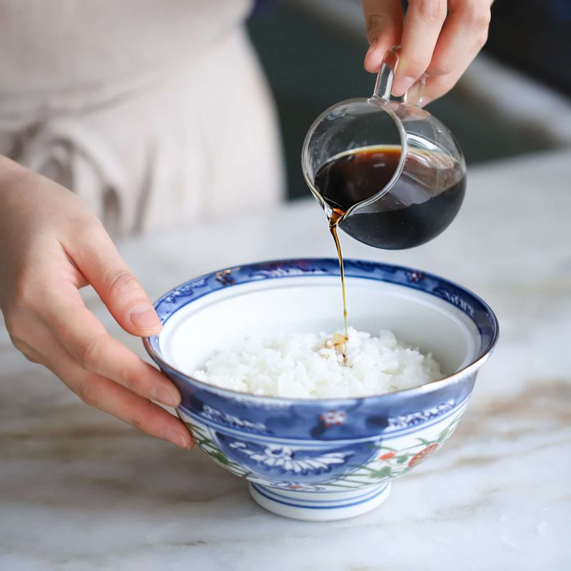

-

새우는 깨끗이 씻어 머리와 내장, 껍질을 제거해주세요. 새우살 안쪽면에 칼집을 내어 곧게 펴주세요..
-

단호박은 껍질째 깨끗이 씻어, 속을 판 후 웨지모양으로 길게 잘라주세요.
연근은 껍질을 벗기고 0.5cm두께로 썰어주세요. 표고버섯은 밑동을 살짝 잘라주세요. 꽈리고추는 깨끗이 씻어주세요.
-

냄비에 가쓰오부시를 제외한 소스재료를 넣고 중불에서 약 3분간 끓이다가 가쓰오부시를 넣은 후 불을 끄고 체에 걸러주세요.
-

볼에 튀김옷 재료를 넣어 젓가락으로 덩어리가 지지 않게 저어주세요.
-

물기를 제거한 생새우와 채소들에 튀김가루를 얇게 묻혀 털어낸 후, 섞어 놓은 튀김반죽을 입혀주세요.
-

170~180도로 달군 기름에 튀김옷을 입힌 새우와 야채들을 바삭하게 튀겨주세요.
-

그릇에 밥을 담은 후 소스를 2큰술 정도 둘러주세요. 튀겨낸 튀김들을 보기 좋게 얹어주세요.
-
튀김은 소스에 찍어 드셔도 좋고, 먹기 직전에 소스를 살짝 뿌려 드셔도 좋아요.